APL99 (Scranton) Notes and Pictures (by Ray Cannon)
Vector 16:2, page 61
A personal review of the Annual Conference
of ACM/SIGAPL held at Scranton, Pennsylvania, USA, August 10th
to 14th 1999
by Ray Cannon
Preamble¶
There is no way that I can condense a four plus day experience, involving over one hundred and thirty APLers from 13 countries, 15 papers, 4 vendor forums, several evening seminars, satisfactorily into the space available within Vector, so here is a flavour derived from some hastily taken notes, and a blurred memory.
Disclaimer. All quotes (attributed and un-attributed) are subject to errors, and are at best my hazy recollection of what I thought I heard someone say. I will therefore apologise in advance for any misquotes, or mis-attributed, and further, to save time (and space in the next edition of Vector), here retract any/every thing that follows.
Scranton: “The Historic Jewel of the Pocono Mountain Region” and the original “Electric City”¶
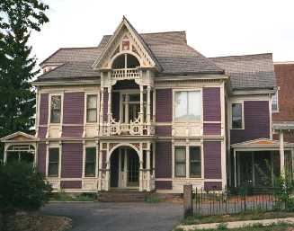
The City of Scranton is located to the North East of Pennsylvania, a 3-hour bus ride from New York City. For over 100 years, it supplied the US with its most important source of energy (anthracite coal), and was a steel and locomotive producer.With the demise of these former industries, Scranton is no longer a growing city, nor can it still boast of having the highest per capita income in the USA. However, it’s not suffering from “inner city decline”, and possesses a friendly “small town America” feel along with some very beautiful houses and civic buildings. Scranton seemed to be very good at “recycling” its buildings, that is changing their use without tearing them down. As part of our APL99 handout, there was a “Restaurant Guide” which included 9 “Downtown” venues, and 4 others within walking distance from the conference. The number one restaurant was billed as “Coney Island – Texas Weiners (a Depression Era Hot Dog Stand). Alan Graham and I had a quick and enjoyable lunch there. I also enjoyed breakfast at “Abe’s Delicatessen” where I had “Kosher bacon” with my eggs. (That should be good for at least one free Weiner and a bagel if I am ever back in Scranton. :-) )
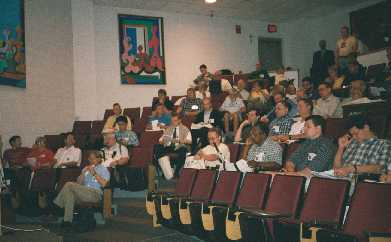
Scranton University Campus is located between downtown Scranton, the railway line and “The Hill” (where all the former railroad and mining barons built their houses and mansions). The University is not large (taking up about seven by two “blocks”), but appeared well equipped, and made a very pleasant venue.Electric City? Well Scranton was the very first city to electrify its streets and to have electric powered trams. Sadly the trams have all deserted the streets and can now only be found in the Tram Museum.
The Reception¶
On the Wednesday evening, Dyadic Systems Ltd. and The Carlisle Group sponsored a delightful reception up on “The Hill”. The location was actually the veranda of Paul Mansour’s beautiful house. Yes I did say the veranda; it was large enough to fit the whole conference without too much overflow onto the steps leading up to the house. It was here that I was first introduced to Alan Graham’s Zero – see What’s New below.
The Banquet¶
The Banquet was held on Thursday night at the Lackawanna Station. (Let me explain, Scranton is the main city in Lackawanna County. Its railway station was built in the grand style and has recently been refurbished to its former glory and converted into a very opulent hotel, the “Lackawanna Station Hotel”.)
In addition to the initial reception in the splendour of the marble-lined main hall, we were treated to a 3(4?) course dinner.
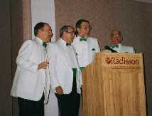
Then we were entertained by the excellent “Steamtunes Barbershop Quartet” (one of whose members is Steve Mansour, the APL99 Conference Chairman) [Steve is at far left in the photo.]This was followed by the presentations of the SigAPL Outstanding Achievement Award, to Roy Sykes (for 1998) and Bill Rutiser (1999).
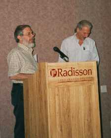
[Bill left and Roy right in the photo.]We were then invited to “APL Berlin 2000” which is being hosted at the Technical University of Berlin between 24th-27th July 2000, with Dieter Lattermann as the Conference Chairman.
[Visit the Conference website at either http://stat.cs.tu-berlin.de/APL-Berlin-2000 or http://www.lingo.com/APL-Berlin-2000 for the latest details.]
Finally Walt Niehoff spoke to us about one of the passions of his life, the “Switch Back Gravity Railroad”, an 18-mile roller-coaster.
The Tours¶
Three tours were organised as part of the conference.
A walking tour of Scranton
This tour took us from the Lackawanna Station to the Reception (see above). Highlights included the Courthouse Square, the Public Library, the Woolworth Building and Scranton’s unique “Hill section”.
Lackawanna Coal Mine Tour
Our journey took us 300 feet beneath the earth where we experienced the cold, dark caverns where “ordinary men (and boys) laboured under extraordinary conditions.”
Steamtown National Historic Site/Steam train excursion
A nostalgic trip through beautiful countryside to Moscow and back.
|
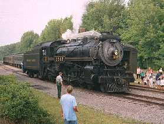 A Canadian Pacific giant on the track Andrei Kondrashev, Sasha Skomorokhov and Nancy Wheeler at Moscow. (right) |
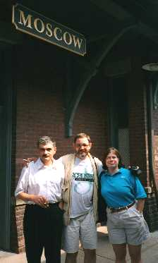 |
What’s New: 2 new APLs¶
SAX for Linux
In the Unix world, when a new implementation of an existing application is released, it is often given a bland name like YACC, short for Yet Another Compiler Compiler. Hence Soliton’s newest APL might have been called YAAI (Yet Another APL Interpreter) but instead they announced it as SAX for Linux. (I still think “SEX for Linux” would have a wider appeal.)
How long before APL2000 and Dyadic respond with their own APL for Linux?
Alan Graham’s 0
The other new addition to the APL family announced at APL99 was Alan Graham’s “0” (that’s a zero not “Oh” ). It is still “vapour ware” but a demonstration version, running as a Dyalog workspace, was shown at APL99, and should be available from the Vector web site by the time this edition of Vector is distributed.
(Vector hopes to have full reviews of both of these APLs in the next edition.)
Featured Speaker: Professor Shiu-Kai Chin¶
Professor Shiu-Kai Chin of Syracuse University gave an excellent talk on “High-Confidence Design for Security”.
Quotes:
“The only time I was able to get a program to work first time, ... was when I built a theorem prover, I did it in a modular fashion, and I used APL. I have never duplicated that experience in my life, and that was 25 years ago! Of course I was naive at the time thinking ‘This is great, just think how much better it will get!’ ”
“The half life of knowledge engineering is about 5 years.”
He briefly described some of the methods that establish the confidence that a system (both in design and implementation) will behave securely.
A HCS (High Confidence System) must withstand both internal and external threats, both natural and intentional (e.g. malicious).
Properties of security include:
- Privacy – Who can read.
- Integrity – Detect corruption of information.
- Authentication – Know the identity of the principle or source of the information.
- Access control – read / write / delete...
- Non-repudiation – Can’t deny a transaction.
- Availability of service – A system must be available for use when its users require it.
Mechanisms of security:
- Encryption – Hiding information in a reversible way.
- Hash functions – Map arbitrary size information into a fixed size. One way only.
- Digital signature
- Certification – You know who I am from my driving licence because the “state” knows who I am and issued me with the licence, and you trust the state.
- Authorisation – The ability to grant (or pass on) permission to do something.
Chin described several forms of encryption (Symmetric, Asymmetric, Public and Private Key) and went on to show some of the problems in implementing them over the Internet. For example, how do you associate Keys with Principles? “Who do you trust?” “How do you know?” After the talk, I asked Professor Chin if he personally trusted the Internet enough to buy things over it with his credit card. His reply was very interesting. Basically “Yes”, but he first checked with his credit card company on his ability to deny a transaction: does the burden of proof lie on the supplier, or with the purchaser. This may vary with credit card companies, but in Professor Chin’s case, it lay on the supplier. This was later borne out when 6 months after ordering, paying for and receiving a book over the internet (NOT through Amazon.com), he was then re-invoiced for a second copy of the same book. He had no problems from his credit card company when he denied the second transaction.
Featured Speaker: Professor Doug Lea¶
Professor Doug Lea of The State University of New York at Oswego. His talk was billed as “Object-Oriented Concurrent, Parallel, and Distributed Programming in Java”, but the talk given was “Exploiting Java”.
Rather than me misrepresenting Doug Lea’s interesting talk, can I point you to the excellent slides he illustrated his talk with, available (as at 5 September ’99) from http://gee.cs.oswego.edu/dl/cpjslides/exploiting.pdf (They require an Acrobat Reader version 3.0 or higher. Version 2.1 will not display them.)
I will however include a few of his many “one-liners”.
“If you put a gun to my head, and gave me like a couple of days, I could probably figure out how to get the standard deviation of a vector of numbers in APL. I’m assuming that if I put a gun to your head, you could probably write a Java program that did something. ”
“When in doubt, make a thread, then think twice, then 3 times about such discussions.”
“No Microsoft products were involved in the production of any of the software...”
“Your toaster-oven with a Java VM in it is a multi-threaded device.”
Talking about a QUAKE server with 5000 open socket connections:
“Having 5000 threads handling 5000 connections, probably just won’t work. It can be done, but it can’t be done very fast.”
During questions, Doug was asked: “What overhead was incurred, when you applied these multi-tasking techniques of ‘divide and conquer’ between multi cpu on a uni-processor device?” His answer I found quite astounding, “Can be NONE”. This, he explained, applied to a uni-processor with a lot of memory. The divide and conquer technique produces very good “memory locality”, which in turn actually reduces system overheads far more than the cpu-cycles incurred by the extra code.
Plenary Session – The ZARK Library of Utility Functions¶
by Gary Bergquist
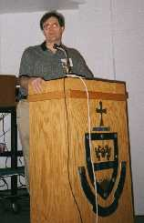
Although originally submitted and accepted as a paper, this was was upgraded into a Plenary session and a Panel Response (with the audience as the “panel”). Gary then proceeded to give a talk on “The 14 Myths of APL” rather than present the paper (published in the proceedings).
Gary started out by declaring that he is a self-confessed APL fanatic.
The 14 myths of APL:
1. Ken Iverson invented APL
Was Calculus invented by Newton or was it always there and just discovered by him?
Gary then listed 10 things that defined APL for him:
- Immediate execution mode;
- Scalar extension;
- Dynamic allocation of memory;
- Simplicity of function: e.g. Order of execution (Right to Left rather than Multiplication before Addition);
- Function syntax in user functions;
- Operators;
- Consistent treatment of “empties”;
- Localisation of variables;
- Reliability after errors and breakpoints;
- User defined functions have the same syntax as primitives, hence you can extend the language.
“I believe when the Aliens come down to land, and exit their little spacecraft, they will have calculus, they will know that E=MC2, and they will have APL, They might not call it APL, but we don’t either.”
2. APL is Dying
“APL is not dying, calculus is not dying, you can’t kill something that was never born. APL has always been there, APL will always be there.”
3. APL is Easy
4. APL is Hard
APL is not easy or hard. APL is ABSTRACT. If you find abstraction easy then APL is easy, if not it will be hard.
“I tried to teach my wife APL, ‘I could’ve learnt it’ she said, ‘but I really have to wash my hair tonight’. Some people can not learn APL, and it is because it’s so abstract.”
5. APL is Unreadable
“You know what, Russian is unreadable, I don’t know Russian, so it’s unreadable. If you don’t know it, it’s unreadable.”
6. APL is Unmaintainable
Because APL is unreadable, it’s a write-only language, hence is unmaintainable.
7. Programming is a Skill not a Profession
Programming is a profession.
“You can’t be an actuary and a programmer, you can’t be an engineer and a programmer, you can’t be a doctor and a lawyer, well you can but I don’t want you operating on me, and I don’t want you representing me in court!”
8. The job of a programmer is to make sure that a computer
system behaves properly and gives the right answers
That’s just a quarter of it. The job of a programmer is to build an application that you can live with and can be maintained.
APL systems written by non-professionals may not be maintainable. It works, it may give the right answer and has some value, but when you need to change it, its value is zero.
9. Each year computers become more important
Computers are becoming cheaper and less important. The use of computers is becoming more important. Programmer time is important.
10. You can program 10 times faster in APL than any other language
“This is only partly true. There are other factors involved.”
The Bergquist Equation of Productivity:
L × E × U = P
P is Productivity. Zero productivity is being catatonic. 1000 is producing it in the time it takes to specify it. (For example, a court stenographer stops typing as the speaker pauses for breath.) L is Language factor, 0.1 for Cobol, 1 for C , 10 for APL.
(APL gets a 10 only if you use it right, if you use it like Fortran you only get a 2; the average for APL is about 8.)
E is Experience. This is not knowing the language. This is you have learnt from your mistakes. For a 10 “if you take your shirt off, your back’s covered in scars, you have made every mistake there is, you have designed the application wrong, and been burned, tried it again and been burned. You have learnt what is wrong.”
U is Utilities. Utilities are extensions to the language.
“If you don’t have these utilities you are dead. The more utilities you have the more productive you can be.”
“APL is the beautiful glue that ties all the utilities together.”
The average C programmer has a good set of utilities so gets a 6. The average (non-professional) APLer gets 2. Gary gave himself a 5 for his utilities.
| L | E | U | P | |
|---|---|---|---|---|
| Average APL | 8 | 4 | 2 | 64 |
| C | 1 | 7 | 6 | 42 |
| Gary | 9 | 8 | 5 | 360 |
APL is more productive than other languages, but not 10 times.
The easiest way for a professional APL programmer to improve his/her productivity, is to improve the utilities. Hence the ZARK Utility library. Gary feels that he could sell us his utilities, but that won’t improve his productivity, the market’s not big enough, and APLers are all cheap anyhow.
What Gary really wants are our utilities. (See ZARK Utility Library notes below.)
11. Avoided re-inventing the wheel
“If we did not re-invent the wheel this would be a Cobol conference, we would have leeches all over our bodies, we would be using 8-track tapes.”
You should always be re-examining the wheel.
12. You can be a programmer or a manager but not both
Gary got us to say the creed:
“I am a programmer, I am a professional, like any other professional, and I demand the proper respect. Like any doctor, lawyer, architect or engineer I work for myself. Any manager I have, will be an office manager, existing only to serve me, not to evaluate me.”
13. APL is a good tool for certain applications
“This is a myth. APL is the perfect tool for all applications, all you need is to find the applications, which is not easy.”
Go out and find an application, offer to maintain it for the owner, and convert it to APL, for a percentage.
APL has got about 10 years before other languages start catching up with it.
14. We need to promote the success stories of APL
This is a myth. We need to be thankful that APL is such a well kept secret.
We need to improve our productivity, and need to clobber the competition.
ZarkLib – The ZARK Utility Library¶
Gary is offering his current utility library to anyone who can pay for it by supplying him with a utility to be included in the library. This new (or modified) utility must improve the library. (The library is defined to be improved if other APLers want the library more because of the change.)
You have to add to the library to get the latest copy. Gary envisages that programmers will keep coming back for the latest version, and pay for that version by adding yet more utilities. This should induce a cascade effect of improvements as is common with a “positive (but regulated) feed-back loop”. The better it gets, the more programmers want it, the more they have to add to it, the better it gets.
Please contact Gary (gabergquist@snet.net) for a copy of the ZarkLib Licence Agreement.
Tutorials¶
Paul Mansour (The Carlisle Group)¶
“Windows, Models and Management MDI, SDI, work spaces, work books, and namespaces.”
The morning after the Reception at Paul Mansour’s house, he hosted this tutorial. Being a bit hung-over at the time, my notes are sketchy so I’ll just give you a few (mis)quotes:
“If you over-design a system you have lost.”
“Be the master of YOUR domain, let the end users be the masters of their domain.”
“God invented Economists to give Weather Forecasters a good name.”
Paul also introduced us to a book called “A Pattern Language” by Christopher Alexander, Oxford University Press. 1977 (YAMAPL – Yet another meaning of APL.) A recommended read for all APLers. Available from Amazon.com where it has been reviewed by 19 people with a star rating of 5. Note: This book is about architecture, not APL.
John Scholes (Dyadic Systems Ltd.)¶
“Dynamic Functions Master Class”
John described dynamic functions as “an alternative low calorie wrapper for APL”. They are faster, sometimes spectacularly so, but never slower.
(For some examples download the FINAPL idiom list, which has been updated in the form of dynamic functions, from Dyadic’s site at www.dyadic.com. It now contains about 800 idioms including a 30-character expression for the “Meaning of Life”.)
John, as usual, both taught and entertained us. In addition to introducing dynamic functions (DFns) to us, he demonstrated how to implement most of the control structures, and covered Dynamic Operators, and explained how recursive calls to DFns can take advantage of “tail end recursion”.
For example, the :For
i:In iii .... :EndFor structure becomes {.....}¨ iii and is very fast as it is special cased.
While talking about their speed, John mentioned a “3.6 mega bloop machine”, which I feel is like a 3 mega flop machine but not quite as disastrous :-).
Vendor Forums¶
Soliton Associates Ltd., Dyadic Systems Ltd., IBM, and APL2000 all hosted vendor forums.
Soliton
Soliton have produced a more portable SAX, and using this new code base have produced new versions for IBM, RISC and LINUX.
SAX for Linux will be royalty-free for personal use and cost $2500 +$1000pa for a production system. (Please check these prices with Soliton.) Beta version available October 1999.
They also have a Beta version of a Java API.
Dyadic
Peter Donnelly gave the “Not the Dyadic Vendor Forum”, as there were:
No Announcements; No Promises; and No Ducks.
What it did contain was an overview of the current version 8.2.2 (upgrade from 8.2.1 via the Internet if you subscribe to DSS) as described at the BAA vendor forum earlier this year. We were then given a glimpse of version 9.0.0’s new function editor which allows MDI (multiple document interface) tiling.
IBM
(In my notes, I have a sketch of a large shark swimming just below the surface of the water though which a pair of webbed (duck?) feet are sticking....)
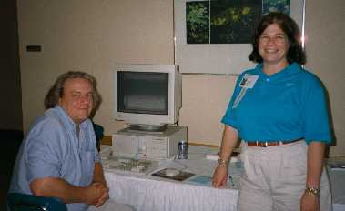
Dave Liebtag and Nancy Wheeler
Nancy Wheeler told us about all the recent releases (including the TCP/IP update for APL2 TSO/CMS). She also talked about the APL2 for Windows “RUNTIME”. The developer’s package runs under NT, producing a DLL which then runs under Windows 95/98/NT.
Dave Liebtag then showed us some of the things he has been working on, in particular “Processor 12” – Files as arrays. This processor (available 4th quarter 1999) has 3 flavours: APL files as arbitrary arrays, Flat files (vector of text vectors +<cr><lf>) and “card image” flat files with fixed length records.
APL2000
“COGNOS bought APL2000 because of the speed of the applications”
Eric Baelen gave a similar presentation to the one he gave at the BAA vendor forum. He also told us about the web site http://www.openhere.com with many excellent APL links.
Again the ducks were targeted (and finally wiped out) by Eric’s video game. (Eric has this computer game, written in APL2000, that allows the player to defend his bunnies by hitting the ducks originating in the UK who are bent on conquering the world.)
Workshops¶
I was unable to attend all the workshops I would have liked, partly due to my late booking and partly due to multiple streaming. Several of the more popular workshops were repeated, which helped a lot.
John Daintree – Dyalog APL and Active Data Objects (ADO)¶
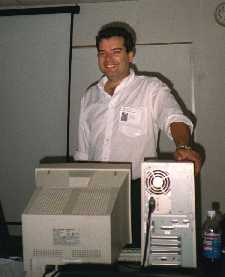
ADO are an object oriented approach to data access and provide a consistent interface via OLDDB to ODBC, SQL Servers etc. They allow you fast access to other data (such as email or text files). Microsoft’s ADO has been around for 12 months or so. ADO ships with Windows 2000 and is available as an add-on for Windows 95/98 and NT4.John gave a good introduction to ADO, but I got lost in the workshop, which required us first to build up an empty MS Access database for a “Music Collection”. Since many of us were not MS Access users this wasted a lot of time (particularly if your spelling is not up to scratch). I felt John should have provided us with the database already built; we were not here to learn how to use MS Access.
Once we had created the database we then had to fill it from Dyalog APL via ADO. This I failed to do because I had taken too long to build the database, and had saved it in the wrong place, so the instructions on the workshop notes did not match what I had on the computer.
Tip to future workshop presenters: keep to the core of the workshop, do not allow the attendees to waste time processing non-core activities.
All was not lost though, John’s workshop notes are excellent and I will be able to try it again from home, once I have downloaded ADO for Win98.
Papers¶
At conferences, I often do not attend many papers, I feel that I can always read them in the proceedings, and that I might miss something else that is not so well documented. However I did attend two:
“When Bears are Blue and Bulls are Red” presented by Linda Alvord and Tama Traberman.
A very interesting paper which used two techniques to provide additional information from a graph at a glance. They used data from the NY stock exchange (where a rising price is a “Bull” market and a fall a “Bear” market).
Linda and Tama, in standard curve fitting exercises, plotted the approximating curve with either an icon of a bull (well it looked like a moose to me) or a bear, depending on the angle of the tangent at the point being plotted. In addition they used colour intensity to indicate the angle of the slope.
So when the price is falling rapidly you end up with a dark blue bear, when it is rising rapidly a bright red bull, and somewhere in the middle you get either a “polar bear “or a “little white bull”.
This technique of highlighting both the the direction and intensity of a trend in a market is very appealing to me.
“Sparse Arrays in J” presented by Roger K. W. Hui.
|
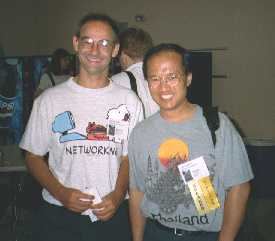 Roger Hui (right) with Martin Neitzel |
Roger’s paper showed how he had implemented a method of representing sparse data as a new data type in J. The technique he uses is to convert the sparse array into a 2-element vector. The first element is an integer matrix, one row for each non-zero element of the array, and a column for each dimension in the array. The values of a row of this matrix define the indices of the non-zero element. The second element is a vector containing the values of the non-zero elements. Sparse arrays may contain data of type boolean, integer, floating point, complex, literal, or boxed. |
Roger’s paper showed how he had implemented a method of representing sparse data as a new data type in J.
The technique he uses is to convert the sparse array into a 2-element vector. The first element is an integer matrix, one row for each non-zero element of the array, and a column for each dimension in the array. The values of a row of this matrix define the indices of the non-zero element.
The second element is a vector containing the values of the non-zero elements. Sparse arrays may contain data of type boolean, integer, floating point, complex, literal, or boxed.
The internal structure is more complex than this, actually consisting of 6 parts, the shape, the axes of which are a vector of the sorted sparse (indexed) axes, the sparse element (usually zero) which is also the fill character, the indices, the values, and various bit flags. Although not a J user, I found the talk appealing since I have seen a similar technique for compressing sparse data used at British Airways within an APL database system called CHIEF (designed by Dave Crossley? in the 1980s), and I have also used operators for processing sparse data. However, having a built-in sparse data structure in J must be much faster and more convenient.
Postscript¶
As a veteran of over a dozen international conferences, I find the personal side the most important. Meeting friends becomes more important than the papers and talks. In this respect, Scranton was as good as it gets. However, I missed quite a few old friends. “APL conference Eclipsed by the Sun” was one title I had thought of calling this article, but that would have been totally unfair. I did see many old friends, and perhaps more importantly, I made several new friends. Old and new, I hope to see them all at “APL Berlin 2000” (July 24-27). Why not join me? [Visit the Conference website at either http://stat.cs.tu-berlin.de/APL-Berlin-2000 or http://www.lingo.com/APL-Berlin-2000 for the latest details.]
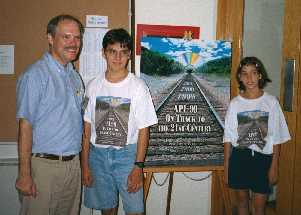
Steve, George and Lisa Mansour with the Conference Poster
A few photos...¶
|
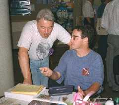 Jim Lucas with Alan Graham |
|
|
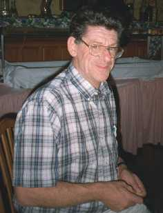 Alan Sykes, bravely standing in for Causeway |
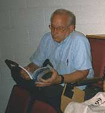 Jim Brown, engrossed in Vector |